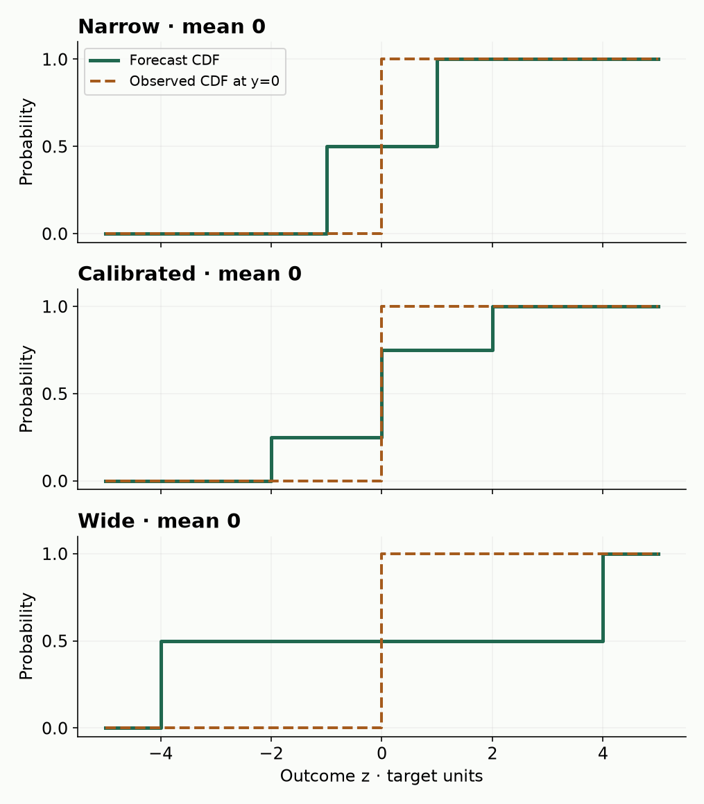
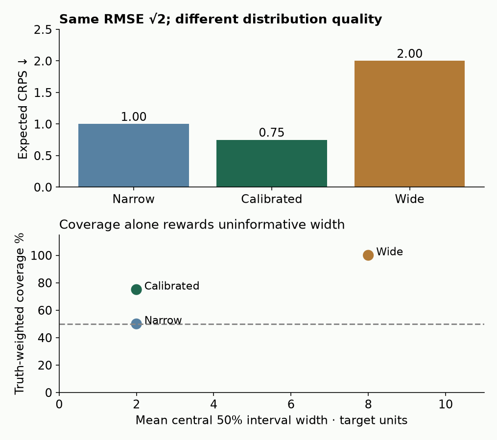

B19a · Predictive distributions, calibration and proper scores¶
Research bridge · Core ★ · One win: distinguish a good mean from a good predictive distribution
B19 asked whether two results describe comparable experiments. Even after aligning their data, splits and model versions, one question remains: what counts as a good prediction? A model predicting demand of 100 units can mean “almost certainly near 100” or “zero or 200 with equal probability.” The same mean can lead to different stocking decisions.
Our relational-learning mission needs both honest comparisons and useful predictions. This lesson adds a metric-and-calibration contract to your B23 reproduction plan. Work through the short trace first; use the notebook and primary paper for the longer lab.
Student notebook · Executed solution · Solution notebook · Printable reference · Reproduction contract
1 · Recall the prediction, not just the score¶
Prerequisites: expectation, probability mass, squared error, train/test separation; recall earlier calibration and conformal-prediction work. A CDF, F(z), is the probability that an outcome is at most z. A quantile, Q(q), is the smallest z with F(z) ≥ q. For a discrete distribution, its CDF jumps and nominal interval coverage need not be exact.
Before reading on, retrieve: Which quantity minimizes expected squared error? Can test labels choose an interval width? Does repeating a fold create a new independent dataset?
Squared loss targets the conditional mean. RMSE takes the square root after averaging squared errors. It cannot distinguish forecasts that share a mean. A proper scoring rule rewards the true predictive distribution in expectation; strict propriety makes it the unique optimum over the stated distribution class. This is a population statement, not a promise that the true distribution wins on every individual outcome. ScoringBench §3 and Appendix A · Distributional regression study
This is an evaluation architecture, not a new neural network. A TFM's probability bins or quantiles and a tree's quantiles are different output representations. Their wrappers must define how to obtain a common CDF and quantiles, including interpolation and tails, before a fair score comparison is possible. Changing the wrapper can change the score without changing the mean.
2 · One mean, three distributions¶
Our complete finite experiment uses these forecasts, all with mean zero:
- Narrow: equal mass at −1 and +1.
- Calibrated: mass ¼, ½, ¼ at −2, 0, +2; this is also our declared true distribution.
- Wide: equal mass at −4 and +4.
The word calibrated here refers to equality with this known toy truth; it does not assert that a trained model is calibrated. We evaluate every possible outcome, weighted by its true probability, so this experiment has no Monte Carlo error.
CRPS measures the distance between a forecast CDF and the observed step CDF. For independent draws X and X′ from a finite forecast:
CRPS(F,y) = E|X−y| − ½ E|X−X′|.
The first term rewards proximity to the observation. The second prevents a distributional forecast from being judged only by average absolute distance to y. It does not make unlimited spread desirable: both terms change together.
Hand trace at y=0: the narrow forecast has E|X|=1. Two independent draws differ by 2 half the time, so E|X−X′|=1. CRPS is 1−½=0.5. For the calibrated forecast, the terms are 1 and 1.5, giving 0.25. For a point mass, the second term vanishes and CRPS becomes absolute error. CRPS has the target's units; 10× larger measurement units produce 10× larger CRPS.

Predict the score, then change the forecast
Green solid: forecast CDF. Orange dashed: observed CDF. CRPS integrates the squared vertical gap; shaded area alone is not CRPS.
At y=0, a point forecast at zero has CRPS 0, beating the true distribution’s 0.25 on that single observation. But it scores 2 at each extreme, so its truth-weighted expected CRPS is 1, worse than 0.75. This does not contradict strict propriety: the statement concerns the expectation over the true outcome distribution. The lab enumerates all 15 mass triples in increments of ¼ on {−2,0,2}; the true masses uniquely minimize expected CRPS in that finite family. This enumeration illustrates the theorem rather than proving it for every distribution.
3 · Coverage needs a width penalty¶
For a central (1−α) interval [l,u], lower interval score is better:
ISα = (u−l) + (2/α)(l−y)·1[y<l] + (2/α)(y−u)·1[y>u].
The first term penalizes width. The other terms penalize misses. With α=0.2, interval [−1,1] and outcome 2: width=2, miss distance=1, multiplier=10, so IS=12. If the observation falls inside, only width is charged. This score elicits the interval's two quantiles, not the entire predictive distribution. Two different distributions can therefore tie on interval score. ScoringBench Appendix A
| Forecast | RMSE ↓ | Expected CRPS ↓ | Expected interval score ↓ | Coverage | Width ↓ |
|---|---|---|---|---|---|
| Narrow | 1.4142 | 1.00 | 4.00 | 50% | 2 |
| Calibrated | 1.4142 | 0.75 | 4.00 | 75% | 2 |
| Wide | 1.4142 | 2.00 | 8.00 | 100% | 8 |
These are exact truth-weighted results, not sample estimates. Our 50% intervals use Q(.25) and Q(.75), with closed endpoints. For the calibrated discrete forecast the interval is [−2,0], which covers 75% of the truth; its jumps explain the excess over 50%. The narrow interval is [−1,1], and the wide interval [−4,4]. Narrow and calibrated forecasts tie on expected interval score although their CRPS differs.
Coverage measures how often y lies inside the interval. Sharpness describes concentration, here interval width. Narrow intervals can miss; very wide intervals can be useless. Evaluate both with an appropriate score. A proper distribution score, calibration diagnostic and point error answer different questions.

4 · Calibration has its own information boundary¶
An interval can be adjusted after fitting. In a simple split-conformal construction, freeze the mean predictor before calibration, compute absolute calibration residuals, and take order statistic k=ceil((n+1)(1−α)). With nine residuals 0,1,…,8 and α=.2, k=8 and the radius is 7. Predict [mean−7,mean+7]. If k>n, the finite-sample convention uses infinite radius; silently choosing the largest residual changes the procedure.
Keep the calibration labels separate from model selection and final evaluation. Our four final outcomes 0,7,8,20 yield coverage 2/4. Adding 100 to all final labels changes coverage to 0/4 but cannot change the fitted radius. That is the notebook's information-boundary test.
Change final labels; keep calibration fixed
This deterministic fixture illustrates computation, not a guarantee. The split-conformal marginal coverage theorem requires exchangeability of calibration and the next test residual, with the predictor fitted independently of their labels. It does not promise the nominal fraction on every small test set, coverage within every customer subgroup, or protection under arbitrary temporal shift. Grouped relational rows require particular care; ordinary row-wise exchangeability cannot simply be assumed. Angelopoulos and Bates, conformal introduction
5 · Read the reproduced tables with the right claim¶
Primary reading: ScoringBench v3 §3, Appendix A and protocol. Read the distributional regression study next for score-dependent training. Keep CRLS, which scores a CDF logarithmically, distinct from a log density score and from CRPS. Our discrete-atom lab deliberately implements CRPS and interval score; density scoring would need a different representation.
We recovered the historical release's complete 38-model roster and recomputed Tables 1, 4 and 5 from all 18,480 selected fold records. The release policy retains 97 common datasets after its coverage filter. All 798 displayed fields match at printed precision, including mean rank, median, MAD, confidence endpoints, effect size and magnitude. Full-precision released leaderboard fields match too. Code snapshot · Output snapshot · Our complete reconstruction
| Target | Models × datasets | Published fields matched | Leading mean rank |
|---|---|---|---|
| CRPS | 38 × 97 | 266 / 266 | finetune_tabpfn_realv2_5_crls: 9.731959 |
| R2 | 38 × 97 | 266 / 266 | finetune_tabiclv2: 10.237113 |
| CRLS | 38 × 97 | 266 / 266 | finetune_tabiclv2: 6.103093 |
The leading mean rank changes between CRPS and CRLS; that is not evidence for a universal winner. The lab preserves every model and dataset effect, rather than selecting the score on which a preferred model wins. Raw scores may have different units across datasets; their cross-dataset median is not an application-wide error cost. Folds are averaged within each dataset before ranking.
Protocol audit: the paper says stratified folds, but the historical runner uses shuffled KFold. Its loader imputes the full feature table before splitting, exposing test feature statistics. The prose's approximate leading CRPS rank also differs from the actual table. We preserve these discrepancies in the contract. Table reconstruction measures numerical agreement, not protocol validity, model quality, or the magnitude of any leakage effect.
The portable notebook reconstructs all mean ranks and medians from an embedded saved-score packet. The repository additionally authenticates the original Parquet extraction and recalculates the full table statistics. Neither operation runs a model or rescores its raw predictive distributions. Fresh fits, pretraining and whole-paper reproduction remain NOT_RUN.
Lab · Make the contract executable¶
Implement three source-visible functions: crps, interval_score, and calibrate. Each has a hand-computable check; each is called by the complete experiment. Then run the independent unit-change and test-label intervention checks. Blank code must fail; copying an author score into the output is not the task.
- Predict which forecast wins expected CRPS, which wins coverage, and where interval scores tie. Explain the result before running.
- Implement and run the complete finite experiment; inspect all nine outcome rows and all 15 candidate distributions.
- Replay the full saved score packet. Explain why averaging fold ranks differs from ranking fold-averaged scores, and why neither creates independent datasets.
- Complete the metric-and-calibration contract for a paired version-pinned TFM versus probabilistic/quantile-tree comparison: accessible data, frozen splits, equal tuning budgets, primary score, quantile/tail rules, units, missing-run handling and independent datasets. This proposed experiment has not been run by B19a.
Exit: explain one forecast with better coverage but worse scoring performance; identify the calibration boundary; defend your metric choice without using final labels. Ask me about any unclear step or bring your contract for review. Retrieve the hand trace again after 1, 7 and 30 days. Author verification does not establish learner mastery.
Next: optional B19b extends beyond ordinary regression; the core route carries this contract to B23 and B24 in the bridge plan. A point-only thesis must explain why uncertainty quality is outside its decision scope.